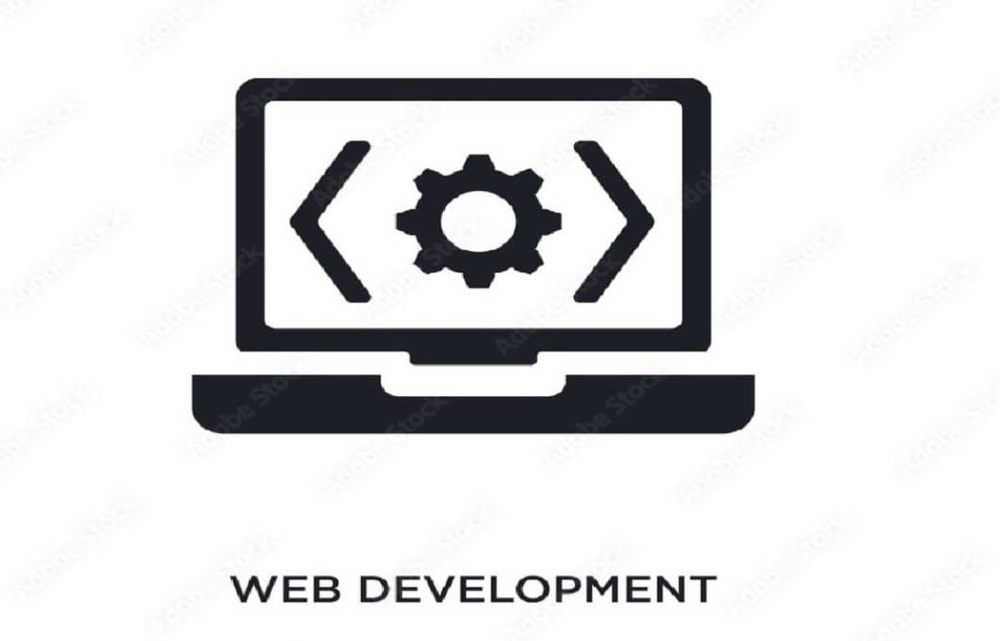

Développement web

Front-End
Le développement web front-end est l'art de créer l'interface utilisateur et l'expérience utilisateur d'un site web ou d'une application web...voir plus Cela implique l'utilisation de langages tels que HTML, CSS, JavaScript pour concevoir et construire la partie visuelle d'un site, y compris les éléments tels que les formulaires, les menus, les bouttons, et les images. Le développement web front-end est une partie importante de la conception web et est essentiel pour créer des sites web et des applications web attrayants et fonctionnels.